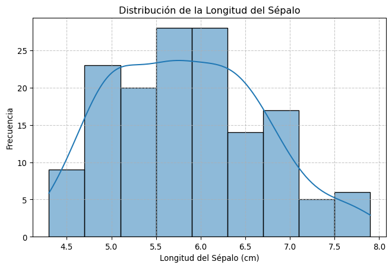
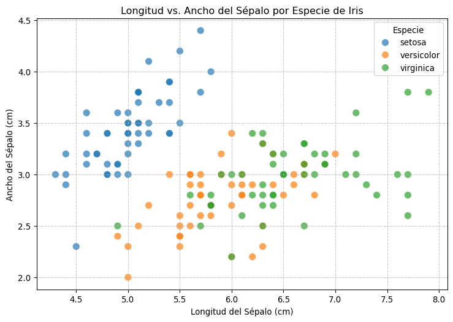
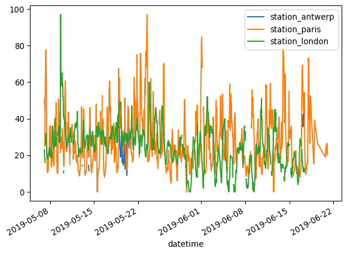
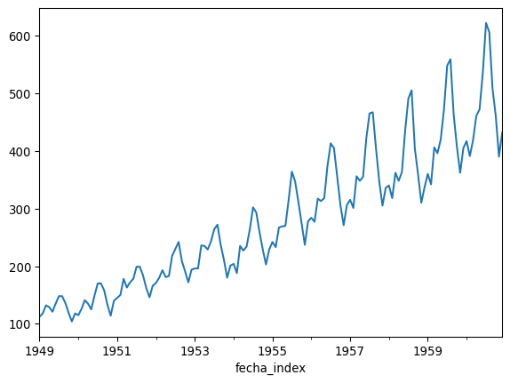
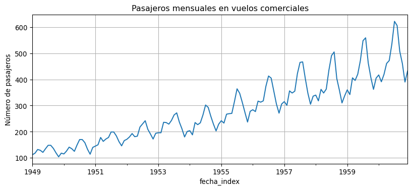

2+24Python es un lenguaje de programación. Para trabajar con el lenguaje, se han desarrollado diferentes interfaces que mejoran el manejo del programa y facilitan el trabajo.
Nosotros utilizaremos Google Colaborate, conocido como Colaboratory o simplemente, Google Colab, basado en el entorno Jupyter, originalmente desarrollado para Python y que se ha convertido en interfase universal de muchos lenguajes de programación.
En este entorno, podemos escribir código y ejecutarlo. También podemos escribir en celdas de texto, lo que nos permite intercalar explicaciones a nuestros cálculos o cualquier otro contenido escrito.
Haciendo click en la barra de opciones a la izquierda sobre la primera opción de índice podemos tener la visión de conjunto del cuaderno
Archivo/Guardar una copia en Drive y guárdalo.colab.toArchivo/Guardar una copia comoArchivo/Cambiar nombre usando el nombre que quierasEn estos ejercicios usaremos varios archivos de datos de demostración. En el primer cuaderno de introducción veremos archivos ya existentes en diversas fuentes de Python, que nos servirán para hacer diferentes ejercicios numéricos y gráficos. En el segundo cuaderno, utilizaremos exclusivamente un archivo de datos en formato CSV (camembert.csv), que contiene los datos analíticos diarios, de producto terminado, de una fabricación de un queso camembert durante un año; son datos reales.
En el entorno jupyter, el texto se introduce en celdas.
Hay dos tipos de celdas: texto y código. En la parte superior de la ventana, puedes elegir el tipo que quieres insertar haciendo click en + Código o bien en + Texto
Para editar una celda de texto existente, haz doble click sobre ella. Ahora puedes escribir usando las convenciones de código markdown. Cuando hayas terminado, ejecuta la celda para que Colab formatee y presente el texto.
Para ejecutar una celda de código, haz click sobre ella.
Shift-Enterejecuta el código y pasa a la siguiente celda.Ctrl-Enterejecuta el código y permanece en la misma celdaRecuerda también que las celdas de código deben ejecutarse en orden secuencial desde el principio
Si la ejecución de una celda de código produce un error, no te preocupes, no tiene consecuencias graves. Simplemente, edita el código y corrige el error. En muchos casos, Google Gemini te puede ayudar a detectar los errores en el código y reescribirlo correctamente.
En su forma más básica, python se puede utilizar como una simple calculadora, utilizando los siguientes operadores aritméticos:
Adición: \(+\) (Ejemplo: \(2+2\))
Resta: \(-\) (Ejemplo: \(2-2\))
Multiplicación: \(*\) (Ejemplo: \(2*2\))
División: \(/\) (Ejemplo: \(2/2\))
Exponenciación: ** (Ejemplo: \(2\)**\(2\))
Prueba a ejecutar las siguientes celdas:
2+242-202*242/21.02**24(3*4)/26.0Una variable permite almacenar un valor (por ejemplo, 4) o un objeto (por ejemplo, una descripción de función). Más tarde se puede usar el nombre de esta variable para acceder fácilmente al valor o al objeto que está almacenado dentro de ella.
Podemos imaginar este concepto como una estantería llena de celdas vacías, en las cuales podemos colocar diferentes objetos: números, letras, frases, etc La variable es el espacio que almacena un valor, y que podemos llamar u obtener simplemente escribiendo su nombre.
En python, una variable es un objeto. Podemos asignar valores a ese objeto, como si colocásemos libros en nuestra estantería. Esta asignación se hace siempre con el operador de asignación =, en la forma
\(nombre\_de\_objeto = valor\)
Por ejemplo, asignaremos un valor 4 a una variable que se llame mi_var con el operador de asignación de la siguiente forma:
\(mi\_var = 4\)
Recuerda que ahora estamos en una celda de texto; prueba a hacer la asignación en la celda de código a continuación, añadiendo el operador de asignación y ejecutando la celda con Mayus-Intro:
mi_var 4Una vez que asignamos un valor a una variable, python recuerda su valor hasta que lo cambiemos mediante una nueva asignación, borremos la variable, o finalicemos nuestra sesión.
Para ver el contenido del objeto(lo que hemos almacenado en mi_var), escribimos el nombre y ejecutamos la celda (sólo si hemos editado y ejecutado correctamente la celda anterior, en caso contrario obtendremos un error porque mi_var no está definida):
mi_varPara facilitar la legibilidad del código, los nombres de variables en python deben cumplir algunas normas generales. Buscaremos siempre que los nombres de los objetos sean descriptivos, por lo que necesitamos una forma de unir varias palabras.
Las convenciones más aceptadas para la designación de nombres de variables en Python se basan principalmente en la PEP 8, la guía de estilo oficial para el código Python. Aquí te resumo los puntos clave:
snake_case, donde las palabras se escriben en minúscula y se separan por guiones bajos.mi_variable, nombre_completo, calcular_total.CamelCase (también conocido como PascalCase), donde cada palabra comienza con mayúscula y no hay separadores.MiClase, GestionDeUsuarios, HttpRequest.ALL_CAPS con guiones bajos para separar las palabras.MAX_VALOR, PI, TASA_INTERES._).mi_variable y Mi_Variable son nombres de variables diferentes.if, else, for, while, etc.) como nombres de variables.i, j, k en bucles) o iteradores, es mejor evitar nombres de variables de una sola letra.l minúscula y el número 1, o la O mayúscula y el número 0._nombre): Un solo guion bajo al principio (_) suele indicar que una variable o función es “interna” o “no pública” dentro de un módulo o clase. Es una convención, no una restricción estricta.__nombre): Los dobles guiones bajos al principio de un nombre de atributo de clase (__nombre) activan el “name mangling” (mutilación de nombre) de Python, que hace que el atributo sea más difícil de acceder directamente desde fuera de la clase, actuando como una forma de “privacidad”.Seguir estas convenciones, especialmente las de la PEP 8, ayuda a que tu código sea más consistente, legible y fácil de entender por otros desarrolladores (y por ti mismo en el futuro).
Usemos un nombre realmente largo para designar a una variable:
este_es_un_nombre_realmente_largo = 5.3Ahora recuperemos el valor que hemos almacenado
este_es_un_nombre_realmente_largo5.3Recuerda que python utiliza la escritura anglosajona para la separación de decimales, usando un punto, y no una coma como en España. ¿Qué pasaría si utilizamos una coma para separar los decimales?
mi_var = 2,5Python acepta la asignación, pero cuando investigamos la variable, el resultado es diferente de lo que esperábamos, no obtenemos un valor numérico:
mi_var(2, 5)Python ha entendido que estábamos creando una tupla de dos valores (2 y 5) (en python, una tupla es una colección ordenada e inmutable de elementos)
Para python las mayúsculas y minúsculas son diferentes: mi_var y mi_Var son variables diferentes.
En una variable python podemos almacenar también texto:
mi_var = "Esto es una frase 12345"Python almacena esta cadena alfanumérica exactamente igual que antes hizo con los valores numéricos:
mi_var'Esto es una frase 12345'mi_var = 123.45mi_var123.45mi_var*5617.25Para almacenar una cadena alfanumérica necesitamos encerrarla entre comillas, ya sean sencillas o dobles. De hecho, si almacenamos un número entre comillas, python no va aidentificarlo como un número, sino como un texto:
mi_var = "123.45"mi_var'123.45'mi_var*5'123.45123.45123.45123.45123.45'Como ahora mi_var es una cadena de letras, python interpreta mi_var*5no como una multiplicación, sino como una instrucción para repetir esa cadena de caracteres cinco veces.
En el ejemplo que acabamos de hacer, seguro que te has dado cuenta de que python permite reutilizar los objetos simplemente reasignándoles el valor correspondiente. Al hacerlo, perdemos el valor original y lo sustituimos por el nuevo valor.
Hay que tener atención con las reglas de escritura: para asignar un texto a un objeto debemos tener cuidado de cerrar las comillas, si no lo hacemos, python nos advertirá del error:
mi_var = "Esto es una cadena alfanumerica que no hemos cerradoIntenta detectar los errores en las siguientes celdas de código:
mi_variable = 10
mi_varıablemi_var = 5
Mi_VarPodemos asignar un objeto a otro objeto con el operador de asignación:
x = 5
y = 3x + y8y = xx + y10Supongamos que tenemos 5 peras y 4 manzanas. Crea una variable que se llame fruta que sume el total de unidades de fruta que tenemos, insertando debajo de esta celda todas las celdas de código que necesites (Pista: ¡En python sí podemos sumar peras con manzanas!)
# Celda para el ejercicio de las frutas
peras = 5
manzanas = 4
fruta = peras + manzanas
print(fruta)9Hemos visto que python puede trabajar con diferentes tipos de datos, tales como números y textos.
Los valores decimales como 4.5 se llaman flotantes(float). Los números enteros como 4 se llaman enteros(ìnt). Los valores booleanos (VERDADERO o FALSO) se denominan booleanos(bool o logical). Los valores de texto (o cadena alfanumérica) se denominan cadenas de caracteres. También se les llama simplemente cadenas. Las comillas en el editor indican que “un texto entre comillas” es una cadena de caracteres. En python, una cadena de caracteres puede escribirse entre comillas dobles, como "pera" o simples, como 'pera'
Algunos ejemplos:
mi_var_numero = 4.5
mi_var_texto = "esto es un texto"
mi_var_texto_2 = 'esto también es un texto'
mi_var_logica = FalseLas variables lógicas pueden tomar los valores True o False (recuerda que las mayúsculas son significativas en python: False no es lo mismo que false o FALSE). Python responde también con un valor lógico cuando hacemos una evaluación lógica. Por ejemplo,
mi_var_numero == 4.5Truemi_var_texto == 4.5FalseComo en python se usa = como operador de asignación, el operador lógico que prueba una igualdad es ==, un doble igual, y no un =, un igual sencillo.
Veamos otros dos ejemplos que proporcionan una respuesta de valor lógico:
mi_var_numero == 10Falsemi_var_numero > 5Falsemi_var_numero != 5 # el operador != significa "no es igual a"TrueHasta ahora hemos usado operadores aritméticos para realizar cálculos básicos y hemos asignado valores a variables. Pero, ¿qué pasa si queremos realizar tareas más complejas o repetir una misma operación muchas veces? Aquí es donde entran las funciones.
Una función es un bloque de código organizado y reutilizable que se utiliza para realizar una única acción relacionada. Piensa en una función como una “receta” o un “mini-programa” que encapsula una serie de pasos. En lugar de escribir esos pasos una y otra vez, simplemente “llamamos” a la función por su nombre.
¿Por qué son útiles las funciones?
Python ya trae consigo muchas funciones integradas (built-in functions) que podemos usar directamente. Veamos algunos ejemplos muy comunes:
print(): Mostrar informaciónEsta función ya la hemos usado. Nos permite mostrar valores, texto o el contenido de variables en la consola
print("¡Hola, esto es una función!")
mi_nombre = "Juan"
print("Mi nombre es:", mi_nombre)¡Hola, esto es una función!
Mi nombre es: Juanlen(): Obtener la longitudEsta función nos devuelve el número de elementos de un objeto, como el número de caracteres en una cadena de texto o el número de elementos en una lista.
frase = "Programar en Python es divertido"
longitud_frase = len(frase)
print("La frase tiene", longitud_frase, "caracteres.")
mi_lista_numeros = [10, 20, 30, 40]
print("Mi lista tiene", len(mi_lista_numeros), "elementos.")La frase tiene 32 caracteres.
Mi lista tiene 4 elementos.type(): Conocer el tipo de datoÚtil para verificar qué tipo de dato tiene una variable.
mi_numero = 100
mi_texto = "Cien"
mi_booleano = True
print(type(mi_numero))
print(type(mi_texto))
print(type(mi_booleano))<class 'int'>
<class 'str'>
<class 'bool'>print() le pasamos lo que queremos mostrar.len() nos devuelve un número.Entender las funciones es clave, porque las librerías que usaremos a continuación son, en esencia, grandes colecciones de funciones especializadas.
Python es un lenguaje muy potente, pero su verdadera fuerza reside en su vasto ecosistema de bibliotecas (también llamadas módulos o paquetes).
Una biblioteca es una colección de código (funciones, clases, etc.) escrito por otros programadores y disponible para que tú lo uses en tus propios proyectos. Imagina que son “cajas de herramientas” especializadas:
Usar librerías nos permite evitar “reinventar la rueda”, ahorrando mucho tiempo y esfuerzo, y aprovechando código que ya ha sido probado y optimizado.
Para poder usar las funciones y herramientas que están dentro de una librería, primero debemos importarla a nuestro entorno de trabajo. La forma más común de hacerlo es con la instrucción import.
importLa sintaxis básica es:
import nombre_de_la_libreriaSin embargo, para las librerías de análisis de datos, es muy común y recomendado usar un alias (un nombre corto) para hacer el código más conciso y fácil de leer. Esto se hace con la palabra clave as:
import nombre_de_la_libreria as aliasAhora vamos a importar las librerías que serán esenciales para trabajar con datos, realizar cálculos estadísticos y crear gráficos en Python.
# Importando las librerías fundamentales para el análisis de datos
# Pandas: Es la librería principal para trabajar con estructuras de datos tabulares
# como Series (vectores) y DataFrames (tablas).
import pandas as pd
# NumPy: Proporciona soporte para arreglos (arrays) y matrices multidimensionales,
# además de funciones matemáticas de alto nivel. Pandas se construye sobre NumPy.
import numpy as np
# Matplotlib.pyplot: Es la librería base para crear gráficos en Python.
# Seaborn la usa "por debajo" para dibujar.
import matplotlib.pyplot as plt
# Seaborn: Es una librería de visualización de datos de alto nivel
# basada en Matplotlib. Facilita la creación de gráficos estadísticos atractivos.
import seaborn as sns
print("¡Librerías principales para el análisis de datos importadas correctamente!")
print("Ahora podemos acceder a sus funciones usando sus alias (pd, np, plt, sns).")¡Librerías principales para el análisis de datos importadas correctamente!
Ahora podemos acceder a sus funciones usando sus alias (pd, np, plt, sns).Una vez que hemos importado una librería con un alias (por ejemplo, pandas as pd), para usar una función de esa librería, escribimos el alias seguido de un punto y el nombre de la función: pd.nombre_de_la_funcion().
Ahora que entendemos las funciones y cómo importar librerías, podemos introducir las estructuras de datos que nos permitirán organizar y manipular nuestros datos de manera eficiente. Las dos más importantes en el contexto del análisis de datos con Python (y con la librería Pandas) son las Series y los DataFrames.
Si en otros lenguajes de programación o herramientas estadísticas has trabajado con el concepto de “vector” (una secuencia de valores de un mismo tipo), el equivalente más directo en Python, usando Pandas, es una Serie.
Creación de una Serie: Podemos crear una Serie a partir de una lista de Python.
# Crear una lista de edades
lista_edades = [25, 30, 22, 35, 28, 40, 33, 29]
# Convertir la lista a una Serie de Pandas
# Usamos 'pd.' porque la función Series() viene de la librería Pandas
edades_serie = pd.Series(lista_edades)
print("Mi Serie de Edades:")
print(edades_serie)Mi Serie de Edades:
0 25
1 30
2 22
3 35
4 28
5 40
6 33
7 29
dtype: int64Operaciones Básicas con Series: Las Series tienen muchas funciones y métodos útiles. Por ejemplo, podemos calcular la media:
print("\nEdad promedio:", edades_serie.mean()) # Usando el método .mean() de la Serie
print("Edad máxima:", edades_serie.max())
print("Edad mínima:", edades_serie.min())
Edad promedio: 30.25
Edad máxima: 40
Edad mínima: 22El DataFrame es la estructura de datos más importante y utilizada en Pandas para el análisis de datos. Es el equivalente a una tabla en una base de datos, una hoja de cálculo de Excel, o un “data frame” en R.
Creación de un DataFrame (a partir de un diccionario): Una forma sencilla de crear un DataFrame pequeño es a partir de un diccionario de Python, donde las claves del diccionario se convierten en los nombres de las columnas y los valores son listas que se convierten en las columnas.
# Crear un diccionario con datos
datos_alumnos = {
'Nombre': ['Ana', 'Luis', 'Marta', 'Pedro', 'Sofía'],
'Edad': [24, 30, 28, 35, 26],
'Ciudad': ['Madrid', 'Barcelona', 'Valencia', 'Sevilla', 'Málaga'],
'Calificación': [8.5, 7.2, 9.1, 6.8, 8.9]
}
# Crear un DataFrame a partir del diccionario
df_alumnos = pd.DataFrame(datos_alumnos)
print("\nDataFrame de Alumnos:")
print(df_alumnos)
DataFrame de Alumnos:
Nombre Edad Ciudad Calificación
0 Ana 24 Madrid 8.5
1 Luis 30 Barcelona 7.2
2 Marta 28 Valencia 9.1
3 Pedro 35 Sevilla 6.8
4 Sofía 26 Málaga 8.9Visualización y exploración básica de DataFrames:
Es fundamental poder echar un vistazo rápido a los datos una vez que están cargados en un DataFrame.
df.head(): Muestra las primeras 5 filas (útil para ver la estructura).df.tail(): Muestra las últimas 5 filas.df.info(): Proporciona un resumen conciso del DataFrame, incluyendo el número de entradas, columnas, tipos de datos no nulos y uso de memoria.df.describe(): Genera estadísticas descriptivas (conteo, media, desviación estándar, etc.) de las columnas numéricas.print("\nPrimeras 3 filas del DataFrame de alumnos:")
print(df_alumnos.head(3)) # Podemos especificar el número de filas
print("\nInformación del DataFrame de alumnos:")
df_alumnos.info()
print("\nEstadísticas descriptivas del DataFrame de alumnos:")
print(df_alumnos.describe())
Primeras 3 filas del DataFrame de alumnos:
Nombre Edad Ciudad Calificación
0 Ana 24 Madrid 8.5
1 Luis 30 Barcelona 7.2
2 Marta 28 Valencia 9.1
Información del DataFrame de alumnos:
<class 'pandas.core.frame.DataFrame'>
RangeIndex: 5 entries, 0 to 4
Data columns (total 4 columns):
# Column Non-Null Count Dtype
--- ------ -------------- -----
0 Nombre 5 non-null object
1 Edad 5 non-null int64
2 Ciudad 5 non-null object
3 Calificación 5 non-null float64
dtypes: float64(1), int64(1), object(2)
memory usage: 292.0+ bytes
Estadísticas descriptivas del DataFrame de alumnos:
Edad Calificación
count 5.000000 5.000000
mean 28.600000 8.100000
std 4.219005 1.036822
min 24.000000 6.800000
25% 26.000000 7.200000
50% 28.000000 8.500000
75% 30.000000 8.900000
max 35.000000 9.100000Selección de Columnas en un DataFrame:
Para trabajar con una columna específica de un DataFrame, la seleccionamos usando corchetes [] y el nombre de la columna entre comillas. El resultado será una Serie de Pandas.
# Seleccionar la columna 'Edad'
edades_alumnos = df_alumnos['Edad']
print("\nColumna 'Edad' (como Serie):")
print(edades_alumnos)
# Calcular la media de la columna 'Calificación'
media_calificacion = df_alumnos['Calificación'].mean()
print(f"\nLa calificación promedio de los alumnos es: {media_calificacion:.2f}")
Columna 'Edad' (como Serie):
0 24
1 30
2 28
3 35
4 26
Name: Edad, dtype: int64
La calificación promedio de los alumnos es: 8.10Ahora que conocemos los DataFrames, podemos entender mejor cómo leer datos reales. El marco de datos o data frame es el objeto más útil y más usado en el análisis de datos. Consiste en una estructura de dos dimensiones, formada por una serie de vectores de igual longitud, igual que una tabla de una hoja de cálculo, en la que cada columna es una variable y cada fila, un caso, observación o individuo. Algunas bibliotecas Python incluyen data frames de muestra, que son útiles para entender cómo están formados.
Veamos uno de ellos, el famoso conjunto de datos iris, creada por el investigador y estadístico Ronald Fisher, que contiene un conjunto de medidas realizadas sobre flores del género Iris realizadas por este investigador en los años 30 del siglo XX.
Para cargar este conjunto de datos de ejemplo, vamos a utilizar una función de la librería seaborn que ya importamos:
# Cargamos el dataset 'iris' usando una función de Seaborn
df_iris_sns = sns.load_dataset('iris')
print("Primeras 5 filas del dataset Iris:")
print(df_iris_sns.head())Primeras 5 filas del dataset Iris:
sepal_length sepal_width petal_length petal_width species
0 5.1 3.5 1.4 0.2 setosa
1 4.9 3.0 1.4 0.2 setosa
2 4.7 3.2 1.3 0.2 setosa
3 4.6 3.1 1.5 0.2 setosa
4 5.0 3.6 1.4 0.2 setosaLa función head() es útil para presentarnos sólo el encabezado del data frame. Veamos la estructura de este data frame más a fondo:
print("\nInformación general del DataFrame Iris:")
df_iris_sns.info()
Información general del DataFrame Iris:
<class 'pandas.core.frame.DataFrame'>
RangeIndex: 150 entries, 0 to 149
Data columns (total 5 columns):
# Column Non-Null Count Dtype
--- ------ -------------- -----
0 sepal_length 150 non-null float64
1 sepal_width 150 non-null float64
2 petal_length 150 non-null float64
3 petal_width 150 non-null float64
4 species 150 non-null object
dtypes: float64(4), object(1)
memory usage: 6.0+ KBprint("\nEstadísticas descriptivas de las columnas numéricas del DataFrame Iris:")
print(df_iris_sns.describe())
Estadísticas descriptivas de las columnas numéricas del DataFrame Iris:
sepal_length sepal_width petal_length petal_width
count 150.000000 150.000000 150.000000 150.000000
mean 5.843333 3.057333 3.758000 1.199333
std 0.828066 0.435866 1.765298 0.762238
min 4.300000 2.000000 1.000000 0.100000
25% 5.100000 2.800000 1.600000 0.300000
50% 5.800000 3.000000 4.350000 1.300000
75% 6.400000 3.300000 5.100000 1.800000
max 7.900000 4.400000 6.900000 2.500000Para utilizar una columna de un dataframe, la seleccionamos por su nombre:
print("\nContenido de la columna 'sepal_length':")
print(df_iris_sns["sepal_length"])
Contenido de la columna 'sepal_length':
0 5.1
1 4.9
2 4.7
3 4.6
4 5.0
...
145 6.7
146 6.3
147 6.5
148 6.2
149 5.9
Name: sepal_length, Length: 150, dtype: float64Ahora que tenemos una columna seleccionada (que es una Serie de Pandas), podemos aplicar directamente funciones estadísticas sobre ella:
# Calculamos la media de la columna 'sepal_length'
media_sepal_length = df_iris_sns["sepal_length"].mean()
print(f"\nLa longitud media del sépalo es: {media_sepal_length:.2f}")
La longitud media del sépalo es: 5.84# También podemos calcular la desviación estándar
desviacion_sepal_length = df_iris_sns["sepal_length"].std()
print(f"La desviación estándar de la longitud del sépalo es: {desviacion_sepal_length:.2f}")La desviación estándar de la longitud del sépalo es: 0.83Con nuestros DataFrames cargados y la comprensión de las Series, podemos realizar rápidamente cálculos estadísticos básicos sobre nuestras columnas numéricas. Pandas hace que esto sea muy sencillo.
.mean(): Media.median(): Mediana.std(): Desviación estándar.min(): Valor mínimo.max(): Valor máximo.sum(): Suma de todos los valores.count(): Número de valores no nulosVamos a aplicar algunas de estas operaciones al DataFrame df_iris_sns:
print("Estadísticas de 'petal_width' en el DataFrame Iris:")
print(f"Media de petal_width: {df_iris_sns['petal_width'].mean():.2f}")
print(f"Mediana de petal_width: {df_iris_sns['petal_width'].median():.2f}")
print(f"Desviación estándar de petal_width: {df_iris_sns['petal_width'].std():.2f}")
print(f"Valor mínimo de petal_width: {df_iris_sns['petal_width'].min():.2f}")
print(f"Valor máximo de petal_width: {df_iris_sns['petal_width'].max():.2f}")
print(f"Número de observaciones de petal_width: {df_iris_sns['petal_width'].count()}")Estadísticas de 'petal_width' en el DataFrame Iris:
Media de petal_width: 1.20
Mediana de petal_width: 1.30
Desviación estándar de petal_width: 0.76
Valor mínimo de petal_width: 0.10
Valor máximo de petal_width: 2.50
Número de observaciones de petal_width: 150Una imagen vale más que mil palabras, y en el análisis de datos, la visualización es fundamental para entender patrones, distribuciones y relaciones en nuestros datos. En Python, las librerías Matplotlib y Seaborn son las herramientas estándar para crear gráficos.
plt): Es la base, una librería de bajo nivel que da un control muy granular sobre cada aspecto del gráfico.sns): Construye sobre Matplotlib, ofreciendo una interfaz de alto nivel para crear gráficos estadísticos complejos y estéticamente agradables con menos código. Es ideal para explorar distribuciones, relaciones entre variables y comparaciones entre grupos.Siempre importamos ambas, ya que Seaborn a menudo usa funciones de Matplotlib para mostrar y personalizar los gráficos (como plt.title() para el título o plt.show() para mostrar el gráfico).
Un histograma nos permite ver cómo se distribuyen los valores de una variable numérica.
# Crear un histograma de la columna 'sepal_length'
plt.figure(figsize=(8, 5)) # Define el tamaño de la figura (ancho, alto)
sns.histplot(data=df_iris_sns, x='sepal_length', kde=True) # kde=True añade una estimación de densidad
plt.title('Distribución de la Longitud del Sépalo') # Título del gráfico
plt.xlabel('Longitud del Sépalo (cm)') # Etiqueta del eje X
plt.ylabel('Frecuencia') # Etiqueta del eje Y
plt.grid(True, linestyle='--', alpha=0.7) # Añadir una cuadrícula opcional
plt.show() # Muestra el gráfico
Un diagrama de dispersión es excelente para visualizar la relación entre dos variables numéricas. Podemos añadir un color (hue) para diferenciar por una tercera variable categórica (como la especie de la flor).
# Crear un diagrama de dispersión de sepal_length vs. sepal_width
plt.figure(figsize=(9, 6))
sns.scatterplot(data=df_iris_sns, x='sepal_length', y='sepal_width', hue='species', s=80, alpha=0.7)
plt.title('Longitud vs. Ancho del Sépalo por Especie de Iris')
plt.xlabel('Longitud del Sépalo (cm)')
plt.ylabel('Ancho del Sépalo (cm)')
plt.legend(title='Especie') # Mostrar leyenda para la especie
plt.grid(True, linestyle='--', alpha=0.7)
plt.show()Los box plots son útiles para visualizar la distribución de una variable numérica para diferentes categorías.
# Crear un box plot de petal_length agrupado por 'species'
plt.figure(figsize=(9, 6))
sns.boxplot(data=df_iris_sns, x='species', y='petal_length')
plt.title('Distribución de la Longitud del Pétalo por Especie')
plt.xlabel('Especie de Iris')
plt.ylabel('Longitud del Pétalo (cm)')
plt.grid(axis='y', linestyle='--', alpha=0.7) # Cuadrícula solo en el eje Y
plt.show()
Usa la biblioteca pandas y el dataset air_quality que tenemos que bajar del sitio oficial de pandas
# Cargar el dataset desde URL oficial de pandas
url = "https://raw.githubusercontent.com/pandas-dev/pandas/main/doc/data/air_quality_no2.csv"
df = pd.read_csv(url, parse_dates=["datetime"])
# Establecer fecha como índice
df.set_index("datetime", inplace=True)
print(df.head()) station_antwerp station_paris station_london
datetime
2019-05-07 02:00:00 NaN NaN 23.0
2019-05-07 03:00:00 50.5 25.0 19.0
2019-05-07 04:00:00 45.0 27.7 19.0
2019-05-07 05:00:00 NaN 50.4 16.0
2019-05-07 06:00:00 NaN 61.9 NaNprint(df.info())<class 'pandas.core.frame.DataFrame'>
DatetimeIndex: 1035 entries, 2019-05-07 02:00:00 to 2019-06-21 02:00:00
Data columns (total 3 columns):
# Column Non-Null Count Dtype
--- ------ -------------- -----
0 station_antwerp 95 non-null float64
1 station_paris 1004 non-null float64
2 station_london 969 non-null float64
dtypes: float64(3)
memory usage: 32.3 KB
Nonedf.plot()
plt.show()
df.station_paris.plot()
plt.show()Vamos a probar con un dataset diferente, el set flights incluido en seaborn, que proporciona los pasajeros por mes en un aeropuerto, durante varios años.
# Cargar dataset
df = sns.load_dataset('flights') # load_dataset() es una función de seaborn
df.head()| year | month | passengers | |
|---|---|---|---|
| 0 | 1949 | Jan | 112 |
| 1 | 1949 | Feb | 118 |
| 2 | 1949 | Mar | 132 |
| 3 | 1949 | Apr | 129 |
| 4 | 1949 | May | 121 |
df.info()<class 'pandas.core.frame.DataFrame'>
RangeIndex: 144 entries, 0 to 143
Data columns (total 3 columns):
# Column Non-Null Count Dtype
--- ------ -------------- -----
0 year 144 non-null int64
1 month 144 non-null category
2 passengers 144 non-null int64
dtypes: category(1), int64(2)
memory usage: 2.9 KBComo la columna month está en inglés y tiene formato category, vamos a crear una nueva columna fecha con formato DateTime, que además convertiremos en index, de manera que pandas pueda representar las series temporales correctamente:
Añadir blockquote
df['fecha'] = pd.to_datetime(df['year'].astype(str) + '-' + df['month'].astype(str), format='%Y-%b')¿Qué hace esta línea?
Crea una nueva columna llamada fecha en el DataFrame df, combinando las columnas year y month para formar una fecha completa, y luego la convierte al tipo datetime64[ns], que es el formato estándar de fechas en pandas.
🔍 Paso a paso
df['year'].astype(str) Convierte la columna year (numérica) a texto. Ejemplo: 1949 → "1949"df['month'].astype(str) Convierte la columna month (tipo category) a texto. Ejemplo: "Jan" → "Jan"df['year'].astype(str) + '-' + df['month'].astype(str) Concatena las dos columnas con un guion. Resultado: "1949-Jan"pd.to_datetime(..., format='%Y-%b') Convierte esa cadena a una fecha usando el formato especificado:%Y → año con cuatro cifras (1949)%b → mes abreviado en inglés (Jan, Feb, Mar, etc.)Veamos ahora la columna que acabamos de crear:
df.head()| year | month | passengers | fecha | |
|---|---|---|---|---|
| 0 | 1949 | Jan | 112 | 1949-01-01 |
| 1 | 1949 | Feb | 118 | 1949-02-01 |
| 2 | 1949 | Mar | 132 | 1949-03-01 |
| 3 | 1949 | Apr | 129 | 1949-04-01 |
| 4 | 1949 | May | 121 | 1949-05-01 |
df['fecha_index'] = df['fecha']
# Establecer 'fecha_index' como índice
df.set_index('fecha_index', inplace=True)
# Verificar resultado
df.head()| year | month | passengers | fecha | |
|---|---|---|---|---|
| fecha_index | ||||
| 1949-01-01 | 1949 | Jan | 112 | 1949-01-01 |
| 1949-02-01 | 1949 | Feb | 118 | 1949-02-01 |
| 1949-03-01 | 1949 | Mar | 132 | 1949-03-01 |
| 1949-04-01 | 1949 | Apr | 129 | 1949-04-01 |
| 1949-05-01 | 1949 | May | 121 | 1949-05-01 |
Ahora ya podemos hacer un gráfico de series, y pandas colocará automáticamente las fechas en el eje X usando la columna index fecha_index:
df['passengers'].plot()
plt.show()
Vamos a rotular el gráfico para mejorar la legibilidad
df['passengers'].plot(title='Pasajeros mensuales en vuelos comerciales', figsize=(10, 4))
plt.ylabel('Número de pasajeros')
plt.grid(True)
plt.show()df['media_movil'] = df['passengers'].rolling(window=12).mean()
df[['passengers', 'media_movil']].plot(title='Pasajeros y media móvil (12 meses)', figsize=(10, 4))
plt.ylabel('Pasajeros')
plt.grid(True)
plt.show()
Los pasos son los mismos tanto si queremos trabajar con un CSVo directamente con una hoja Excel: 1. Seleccionamos el icono de carpeta a la izquierda, que nos abre la barra lateral de Archivos 2. Hacemos click sobre el icono de la hoja con la flecha vertical, lo que nos abre una ventana de selección de archivos. 3. Seleccionamos la hoja de cálculo o CSVcon la que vamos a trabajar y la subimos al espacio de trabajo de Google Colaborate
Una vez la hoja de cálculo o el CSV en nuestro espacio de trabajo, procedemos a leer los datos.
El mayor inconveniente de esta forma de trabajo es que cada vez que salimos de la sesión, Google Colab borra todos nuestros archivos del espacio de trabajo; cada vez que iniciemos una sesión, tendremos que repetir el proceso de subir nuestros datos al espacio de trabajo.
Esta es una opción mucho más cómoda que nos evita los pasos intermedios, ya que no necesitamos subir la hoja de cálculo al espacio de trabajo.
Veamos las dos alternativas:
import pandas as pd
# Montar Google Drive si tu archivo está allí
from google.colab import drive
drive.mount('/content/drive')
# Ruta de tu archivo Excel. Asegúrate de que esta ruta sea correcta.
# Si está en la raíz de tu Drive, sería algo así:
archivo_excel = '/content/drive/MyDrive/ejemplo_muestreo.xlsx'
# Si el archivo está directamente en el entorno de Colab (subido o creado allí),
# la ruta podría ser simplemente el nombre del archivo si estás en el mismo directorio:
# archivo_excel = 'ejemplo_muestreo.xlsx'
# Leer el archivo Excel, especificando la hoja
df = pd.read_excel(archivo_excel, sheet_name="Hoja1")
# Mostrar las primeras filas del DataFrame para verificar
print(df.head())import pandas as pd:
pandas, que es fundamental para el manejo y análisis de datos en Python. Es una convención llamarla pd.Montar Google Drive (si es necesario):
ejemplo_muestreo.xlsx está almacenado en tu Google Drive, necesitas montar Drive en tu entorno de Colab para poder acceder a él. Las líneas from google.colab import drive y drive.mount('/content/drive') se encargan de esto./content/drive/MyDrive/.archivo_excel = '/content/drive/MyDrive/ejemplo_muestreo.xlsx':
/content/drive/MyDrive/nombre_de_tu_carpeta/ejemplo_muestreo.xlsx.ejemplo_muestreo.xlsx) debería funcionar.df = pd.read_excel(archivo_excel, sheet_name="Hoja1"):
pd.read_excel() es el equivalente directo a read_excel() de readxl en R.sheet_name="Hoja1" especifica qué hoja del libro de Excel quieres leer. Es el equivalente al argumento sheet = "Hoja1" en R. Puedes usar el nombre de la hoja o su índice (donde 0 es la primera hoja, 1 la segunda, etc.).print(df.head()):
df), puedes usar df.head() para ver las primeras 5 filas y asegurarte de que los datos se cargaron correctamente. Esto es similar a head(df) en R.Con estos pasos, tendrás tus datos de Excel cargados en un DataFrame de pandas, listos para ser manipulados y analizados en Python.
En este capítulo hemos tomado contacto con python y su utilización a través de un interface Jupyter, en este caso Google Colaborate. Hemos visto los principales tipos de datos, particularmente el data frame, y hemos aprendido a leer datos que previamente se habían introducido en una hoja de cálculo. Ya estamos listos para empezar a utilizar python en el análisis de nuestros datos de producción.